Introduction
This documentation introduces the SWIFT Cloud app and its integration with OpenStack Swift object storage. The system allows users to store, manage and access files from multiple platforms including desktop and mobile devices.
Cloud Computing
Cloud computing provides computing resources such as storage, networking and processing power over the internet. Instead of maintaining physical servers locally, users can dynamically allocate resources from cloud providers when needed.
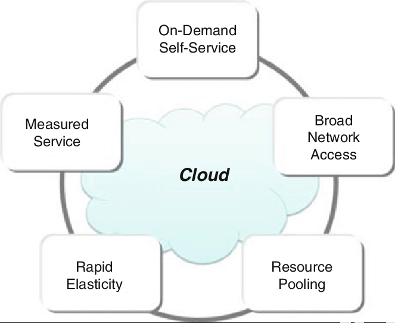
Key Characteristics
- • On-Demand Self-Service
- • Broad Network Access
- • Resource Pooling
- • Rapid Elasticity
- • Measured Service
Cloud Service Models
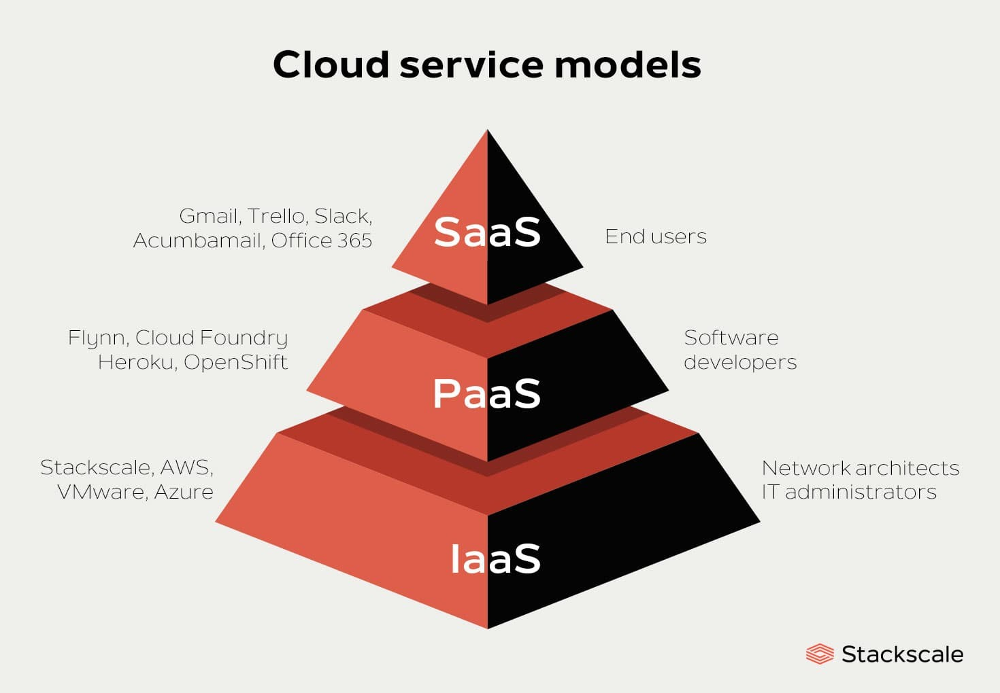
- • Infrastructure as a Service (IaaS)
- • Platform as a Service (PaaS)
- • Software as a Service (SaaS)
OpenStack
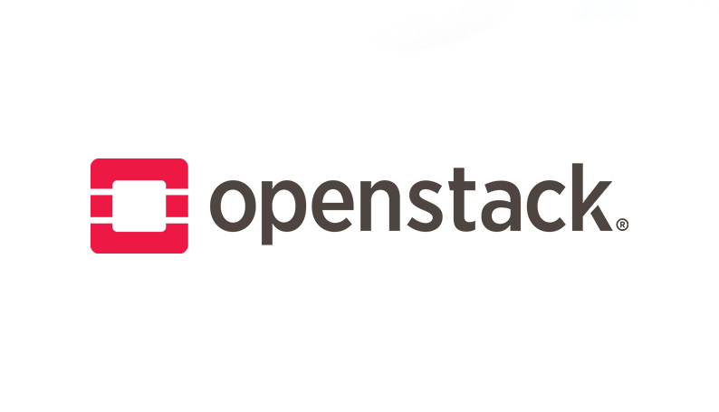
OpenStack is an open-source cloud computing platform used to build and manage private or public cloud infrastructures. It provides a collection of modular services responsible for computing, networking, storage and identity management. These services communicate through APIs to create a flexible and scalable Infrastructure-as-a-Service (IaaS) environment.
The modular architecture of OpenStack allows different services to operate independently while still working together as a complete cloud platform. Each service focuses on a specific task such as virtual machine management, network configuration or object storage.
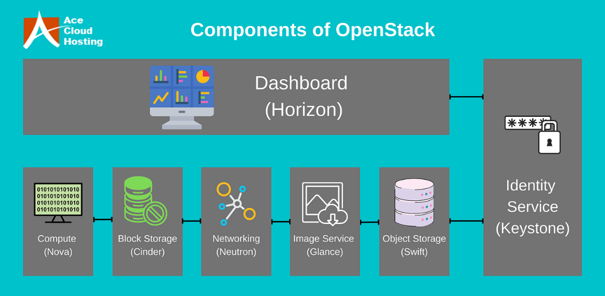
Core Components of OpenStack
- Horizon (Dashboard) – A web-based interface that allows administrators and users to manage cloud resources such as instances, networks and storage through a graphical dashboard.
- Nova (Compute Service) – Responsible for provisioning and managing virtual machine instances in the cloud infrastructure.
- Neutron (Networking Service) – Provides networking capabilities including IP management, routing and virtual network configuration.
- Glance (Image Service) – Stores and manages virtual machine images used for launching instances.
- Cinder (Block Storage) – Provides persistent block storage volumes that can be attached to virtual machines.
- Swift (Object Storage) – A distributed object storage system designed to store large amounts of unstructured data such as files, images and backups.
- Keystone (Identity Service) – Manages authentication and authorization for all OpenStack services.
Authentication and Storage Workflow
In this project, OpenStack Keystone and Swift work together to provide secure access to cloud storage. Keystone handles authentication while Swift manages object storage operations. The system uses a token-based authentication mechanism to allow secure communication between services.
System Architecture
Swift organizes data into containers and objects. When users upload files, they are stored as objects inside containers. Swift distributes these objects across multiple storage nodes to ensure reliability and high availability. This distributed architecture enables the storage system to scale efficiently as the amount of stored data increases.

System Workflow
- 1. User Interaction – The user accesses the SWIFT Cloud client application from a desktop, laptop or mobile device.
- 2. Credential Submission – The client application sends the user's credentials to the Keystone identity service for authentication.
- 3. Token Generation – Keystone verifies the credentials and generates an authentication token that represents the user's identity.
- 4. Authenticated Request – The client sends a request to the Swift object storage service along with the authentication token.
- 5. Token Verification – Swift checks the token with Keystone to confirm that the request is authorized.
- 6. Storage Operation – Swift processes the request such as uploading, downloading or listing objects stored in containers.
- 7. Response Delivery – The result of the operation is returned to the client application and displayed to the user.
Installation
To run the SWIFT Cloud client application, users must first deploy an OpenStack Swift storage server. This section describes how to install OpenStack Swift using DevStack and configure a replicated Swift storage environment for testing data redundancy, fault tolerance and recovery.
1. Install the SWIFT Cloud Client
- • Download the SWIFT Cloud client from the Download section of the website.
- • Extract the package to your local machine.
- • Run the application according to your operating system.
- • Ensure that you have valid OpenStack Swift credentials.
2. Prepare a DevStack Environment
Create a dedicated user named stack which will be used to run OpenStack services.
sudo useradd -s /bin/bash -d /opt/stack -m stack sudo chmod +x /opt/stack echo "stack ALL=(ALL) NOPASSWD: ALL" | sudo tee /etc/sudoers.d/stack sudo -u stack -i
3. Download DevStack
git clone https://opendev.org/openstack/devstack cd devstack
4. Configure DevStack
Create a file named local.conf inside the DevStack directory. Configure passwords and host IP according to your environment.
[[local|localrc]] # Passwords ADMIN_PASSWORD= DATABASE_PASSWORD= RABBIT_PASSWORD= SERVICE_PASSWORD= # Network HOST_IP= disable_all_services # Core Services enable_service mysql enable_service rabbit enable_service key enable_service memcached enable_service apache # Swift Services enable_service swift enable_service s-proxy enable_service s-object enable_service s-container enable_service s-account # Horizon Dashboard enable_service horizon # Swift Configuration SWIFT_HASH=devstackswift SWIFT_REPLICAS=1 SWIFT_DATA_DIR=$DEST/data/swift
5. Install OpenStack Services
Run the DevStack installation script.
./stack.sh
6. Configure Users in Horizon
After installation is completed, log in to Horizon and create projects, users and permissions required for Swift access.
7. Configure Swift Replication Environment
Instead of using the default single-device Swift storage configuration, this project uses two storage devices (sdb1 and sdb2) to demonstrate object replication and fault recovery.
Step 1 – Expand sdb1 to 20GB
ls -lh /opt/stack/data/swift/drives/images/swift.img sudo truncate -s 20G \ /opt/stack/data/swift/drives/images/swift.img sudo losetup -c /dev/loop0 sudo xfs_growfs /opt/stack/data/swift/drives/sdb1 df -h /opt/stack/data/swift/drives/sdb1
Expected size: approximately 20GB.
Step 2 – Create the Second Storage Device (sdb2)
sudo truncate -s 20G \ /opt/stack/data/swift/drives/images/swift2.img sudo mkfs.xfs -f \ /opt/stack/data/swift/drives/images/swift2.img sudo mkdir -p \ /opt/stack/data/swift/drives/sdb1/1/sdb2 sudo mount -o loop,noatime,nodiratime \ /opt/stack/data/swift/drives/images/swift2.img \ /opt/stack/data/swift/drives/sdb1/1/sdb2
sudo mkdir -p \ /opt/stack/data/swift/drives/sdb1/1/sdb2/objects sudo mkdir -p \ /opt/stack/data/swift/drives/sdb1/1/sdb2/accounts sudo mkdir -p \ /opt/stack/data/swift/drives/sdb1/1/sdb2/containers sudo chown -R stack:stack \ /opt/stack/data/swift/drives/sdb1/1/sdb2
Step 3 – Add sdb2 to Swift Rings
/opt/stack/data/venv/bin/swift-ring-builder \ /etc/swift/object.builder add \ r1z2-127.0.0.1:6613/sdb2 1 /opt/stack/data/venv/bin/swift-ring-builder \ /etc/swift/container.builder add \ r1z2-127.0.0.1:6611/sdb2 1 /opt/stack/data/venv/bin/swift-ring-builder \ /etc/swift/account.builder add \ r1z2-127.0.0.1:6612/sdb2 1
Step 4 – Set Replication Factor
/opt/stack/data/venv/bin/swift-ring-builder \ /etc/swift/object.builder set_replicas 2 /opt/stack/data/venv/bin/swift-ring-builder \ /etc/swift/container.builder set_replicas 2 /opt/stack/data/venv/bin/swift-ring-builder \ /etc/swift/account.builder set_replicas 2
Step 5 – Rebalance Rings
/opt/stack/data/venv/bin/swift-ring-builder \ /etc/swift/object.builder rebalance /opt/stack/data/venv/bin/swift-ring-builder \ /etc/swift/container.builder rebalance /opt/stack/data/venv/bin/swift-ring-builder \ /etc/swift/account.builder rebalance
Step 6 – Verify Ring Configuration
/opt/stack/data/venv/bin/swift-ring-builder \ /etc/swift/object.builder
The output should display 2 replicas and 2 devices (sdb1 and sdb2).
Step 7 – Restart Swift Services
sudo systemctl restart devstack@s-account sudo systemctl restart devstack@s-container sudo systemctl restart devstack@s-object sudo systemctl restart devstack@s-proxy
8. Replication Verification
Upload a file through Horizon and verify that object replicas exist on both storage devices.
echo "========== NODE 1 (sdb1) ==========" find /opt/stack/data/swift/drives/sdb1/1/sdb1 -name "*.data" echo echo "========== NODE 2 (sdb2) ==========" find /opt/stack/data/swift/drives/sdb1/1/sdb2 -name "*.data"
9. Node Failure and Recovery Test
This experiment demonstrates the fault-tolerance capability of OpenStack Swift. Since the storage system has been configured with two replicas, object data should remain available even if one storage device loses its local copy.
In OpenStack Swift, uploaded objects are stored inside partition directories that are automatically generated by the Swift ring hashing mechanism. Therefore, partition numbers are not fixed and may vary between deployments.
Before simulating a failure, identify the available object partitions stored on sdb1.
find /opt/stack/data/swift/drives/sdb1/1/sdb1/objects \ -maxdepth 1 -type d
The output may contain partition directories similar to:
objects/302 objects/187 objects/541 ...
Select a partition that contains uploaded object data and remove it from sdb1 to simulate a storage node failure. The partition number shown below is only an example and should be replaced with an existing partition in your environment.
sudo rm -rf \ /opt/stack/data/swift/drives/sdb1/1/sdb1/objects/<partition_id>
Example:
sudo rm -rf \ /opt/stack/data/swift/drives/sdb1/1/sdb1/objects/302
After removing the partition, restart the Swift Object service and manually trigger the replication process.
sudo systemctl restart devstack@s-object /opt/stack/data/venv/bin/swift-object-replicator \ /etc/swift/object-server/1.conf once
The replicator scans all devices and compares local partitions with their replicas stored on other devices. If a partition is missing, Swift automatically reconstructs the lost data from the remaining replica.
Verify that the deleted partition has been recreated:
find /opt/stack/data/swift/drives/sdb1/1/sdb1/objects \ -maxdepth 1 -type d
If the partition reappears and the uploaded objects remain accessible, the recovery process has completed successfully. This confirms that the OpenStack Swift replication mechanism can automatically restore lost object data after a storage failure.
10. Conclusion
The Swift storage cluster is now configured with two replicated storage devices. This setup demonstrates object replication, node failure simulation and automatic recovery using the OpenStack Swift replication mechanism.
Desktop Application (Windows / Linux / macOS)
The SWIFT Cloud desktop client provides a graphical interface that allows users to interact with OpenStack Swift object storage. Through this application, users can upload, download, organize and manage files stored in the cloud. The interface is designed to be simple and intuitive while still providing powerful cloud storage management capabilities.
1. Login to the Application
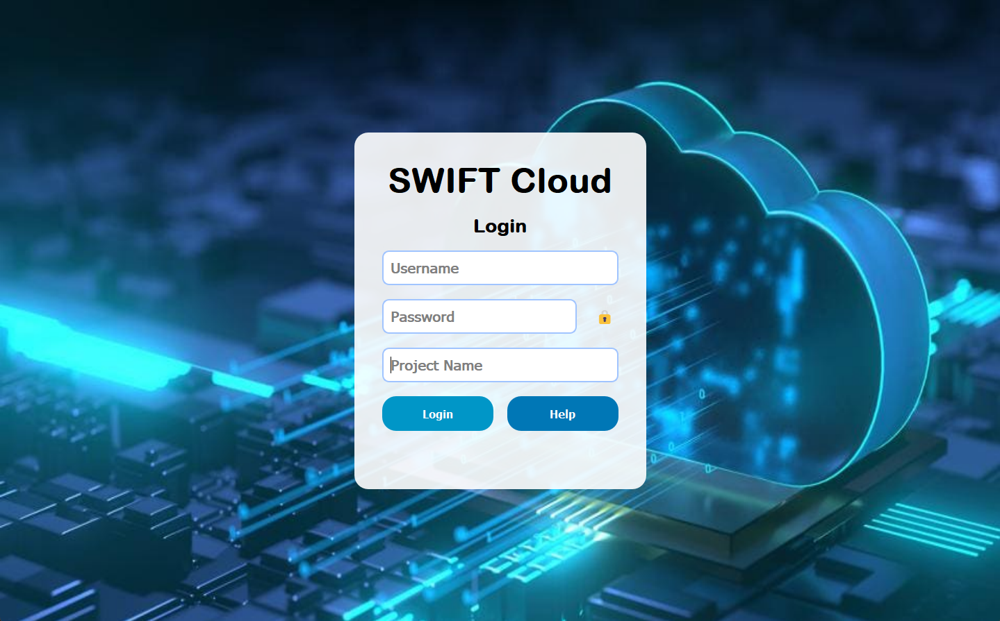
- • Users must enter their Username, Password and Project Name to authenticate with the OpenStack Swift storage system.
- • If any required field is missing or incorrect, the application will display an authentication error.
- • The Help menu provides several configuration options including:
- - User Manual: Displays the application usage guide.
- - Change Swift Auth URL: Allows users to configure the authentication endpoint of the OpenStack Swift server depending on their deployment environment.
- - Enable/Disable DICOM Bridge: Allows users to enable or disable the DICOM Bridge feature if medical imaging integration is required.
2. Main Application Interface
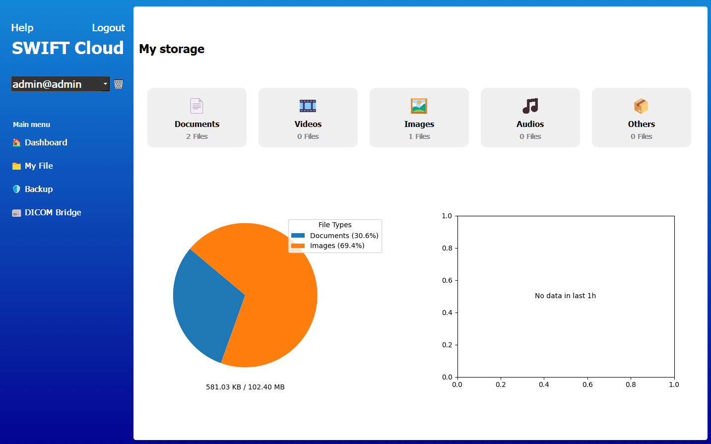
- • The application interface is divided into two main sections.
- • Left Panel: Contains the application logo, user controls, Help button, Logout option and the navigation tabs.
- • Right Panel: Displays the content of the selected functional tab.
- • Users can switch between different features using the navigation tabs.
3. Dashboard
- • The Dashboard provides an overview of the current cloud storage usage.
- • Files are categorized based on their file extensions (documents, images, videos, etc.).
- • A pie chart visualizes the storage distribution across different file types.
- • A line chart displays the number of files uploaded within the last hour.
4. My File Manager

- • The My File tab provides a file manager interface for organizing cloud storage content.
- • The following main operations are available:
- - Refresh: Reload the current folder and file list.
- - New Folder: Create a new directory inside the current container.
- - Upload File/Folder: Upload files or entire folders from the local system.
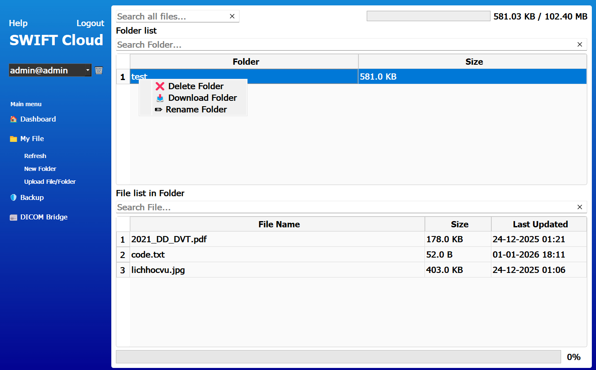
- • Additional file management features include:
- - Download files or folders from cloud storage.
- - Delete files or folders.
- - Rename existing files or directories.
- - Search within the current folder using the search bar.
- - Use the global search function to locate files across the storage system.
- - The usage bar displays the currently available cloud storage capacity.
- - Table headers allow sorting file attributes in ascending or descending order.
- - Drag-and-drop functionality allows users to upload files directly into the interface.
- - Image files such as .jpg or .png can be previewed by double-clicking.
- - Text files (.txt) can be opened, edited and saved directly within the application.
5. Backup System
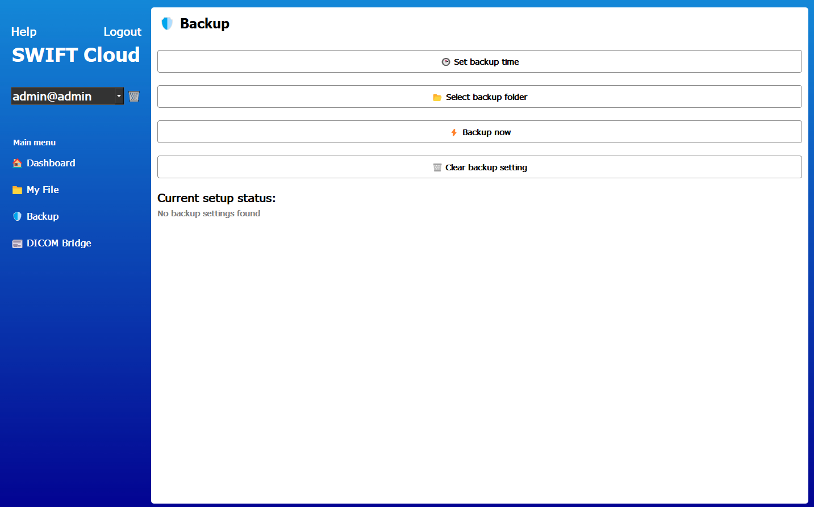
- • The Backup tab allows users to configure automatic backups.
- • Users can define the backup schedule including:
- - Daily backup
- - Weekly backup
- - Specific day backup
- • Users can select local folders to be backed up to the cloud storage.
- • The Backup Now option performs an immediate backup based on the current configuration.
- • The Clear Backup Setting button removes the existing backup configuration.
- • The system displays the remaining time before the next scheduled backup.
6. DICOM Bridge
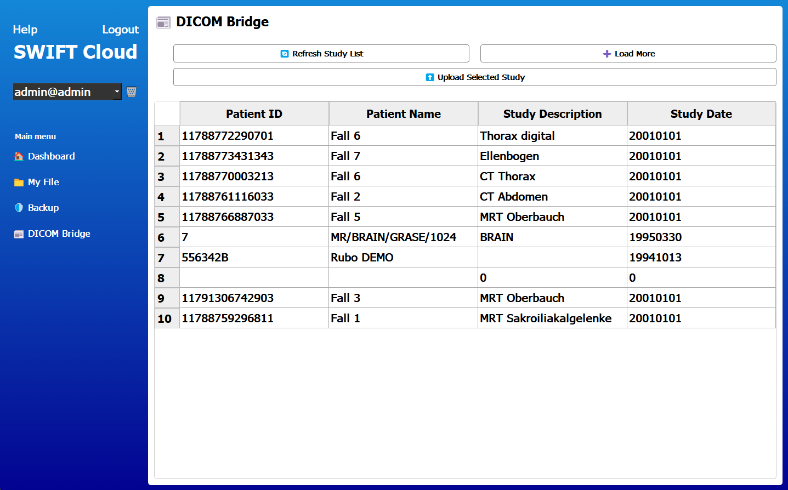
- • The DICOM Bridge tab integrates medical imaging data with cloud storage.
- • Users can retrieve study lists from the Orthanc PACS server.
- • Available functions include:
- - Refresh Study List
- - Load More Studies
- - Upload Selected Study to Cloud Storage
7. Help and Configuration
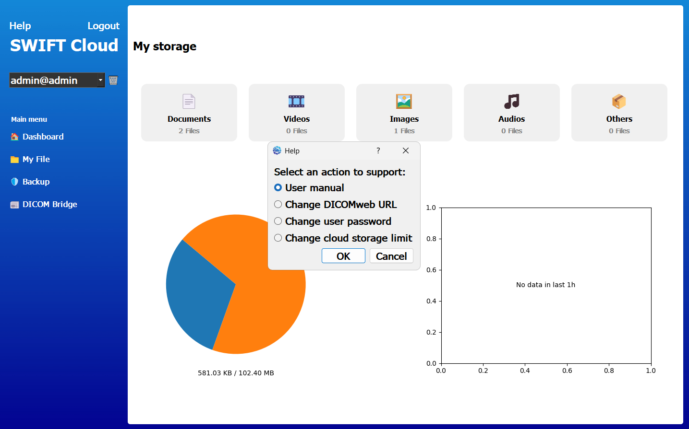
- • The Help dialog provides several configuration and support features.
- - User Manual: Displays the application documentation.
- - Change DICOMweb URL: Configure the Orthanc DICOM server endpoint.
- - Change User Password: Allows users to update their password.
- - Change Cloud Storage Limit: Modify the storage quota (requires administrator credentials).
Android Application
The Android version of the SWIFT Cloud client allows users to access OpenStack Swift object storage directly from mobile devices. The mobile application provides essential cloud storage functions such as browsing files, uploading data, managing backups and interacting with the cloud storage system through a simplified mobile interface.
1. Login to the Application
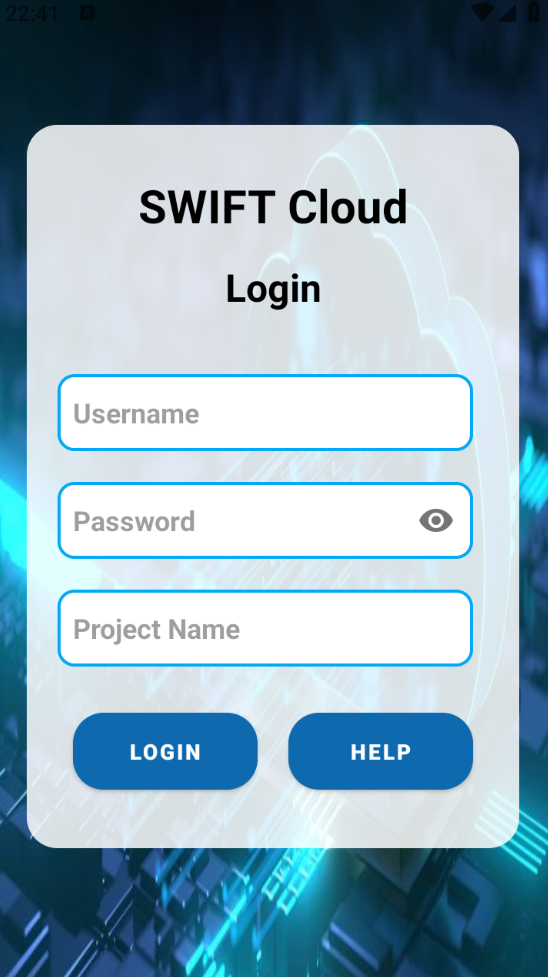
- • Users must enter their Username, Password and Project Name to authenticate with the OpenStack Swift server.
- • The application sends the credentials to the Keystone Identity Service for authentication.
- • If any required field is missing or incorrect, the login process will fail and an error message will be displayed.
- • After successful authentication, the user is redirected to the main interface of the application.
2. Main Application Interface
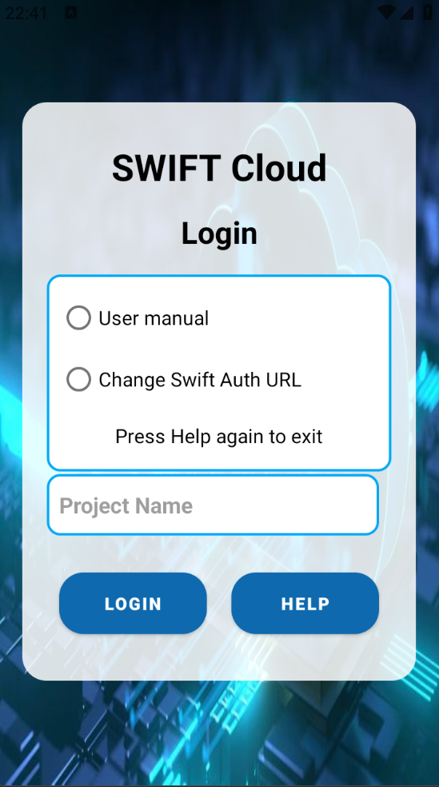
- • The main interface contains the primary navigation menu of the application.
- • Users can switch between different functional sections such as Dashboard, My Files, Backup and Settings.
- • The interface is optimized for mobile interaction and touch gestures.
- • Each section displays specific information or management tools related to cloud storage.
3. Dashboard
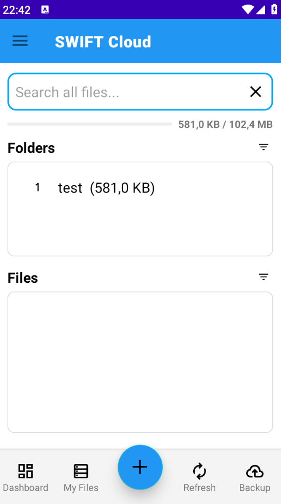
- • The Dashboard provides a quick overview of the user's cloud storage system.
- • It displays statistical information about stored files and current storage usage.
- • Users can view charts or summaries showing how the cloud storage space is being utilized.
- • This view helps users quickly understand the status of their stored data.
4. My Files
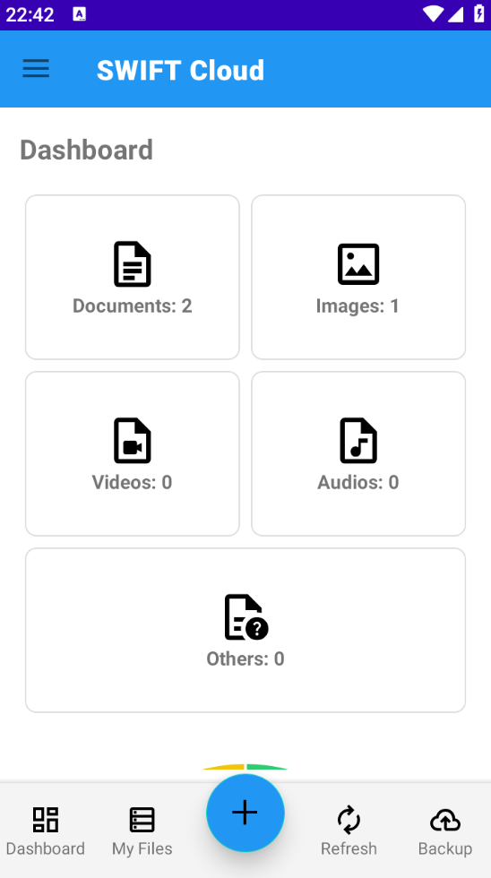
- • The My Files section functions as a mobile file manager for cloud storage.
- • Users can browse files and folders stored in OpenStack Swift containers.
- • Supported operations include:
- - Upload files from the mobile device to cloud storage.
- - Download files stored in the cloud.
- - Delete files that are no longer required.
- - Navigate through folders and containers.
- • The interface is designed to resemble common mobile file explorer applications.
5. Backup Feature
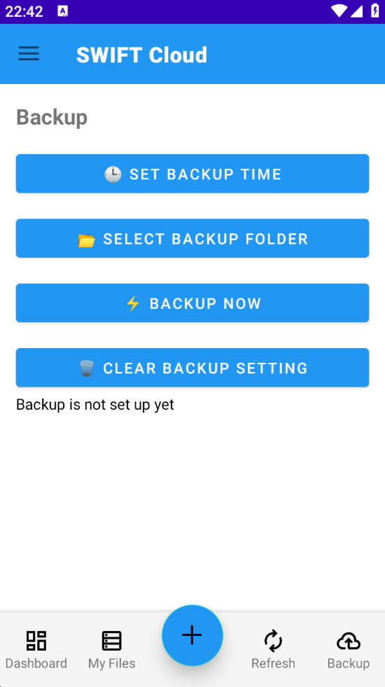
- • The Backup feature allows users to upload important files from their mobile device to cloud storage.
- • Users can configure which files or folders should be backed up.
- • Backup operations can be performed manually whenever needed.
- • This feature helps users maintain secure copies of important data in the cloud.
6. DICOM Bridge
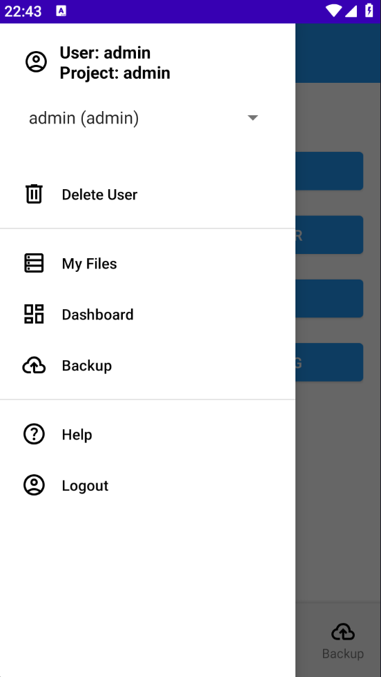
- • The DICOM Bridge enables integration between the mobile application and medical imaging systems.
- • The application can retrieve study data from an Orthanc PACS server.
- • Users can select medical imaging studies and upload them to cloud storage.
- • This feature is particularly useful for medical environments where imaging data needs to be stored and accessed remotely.
7. Help and Settings
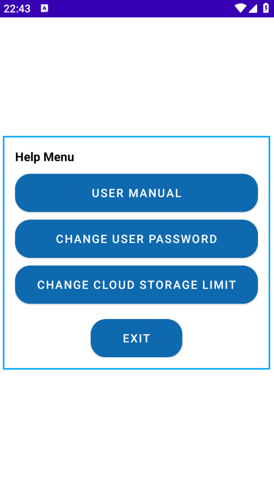
- • The Help section provides documentation and configuration options for the application.
- • Users can access the built-in user manual for guidance on how to use the application.
- • Configuration options allow users to modify system parameters such as the Swift authentication URL.
- • Additional settings allow users to update account information and application preferences.